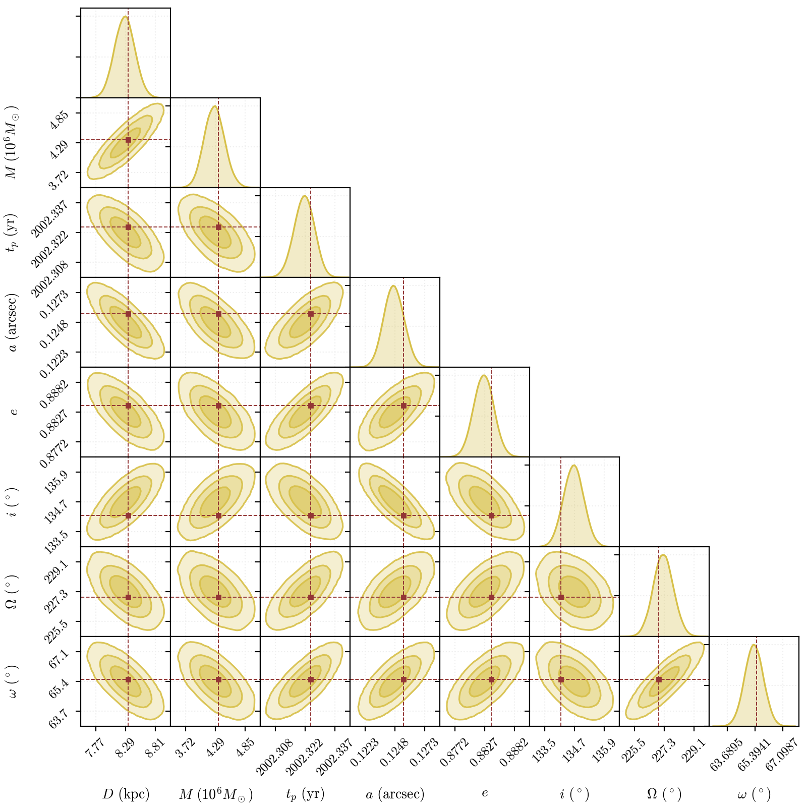
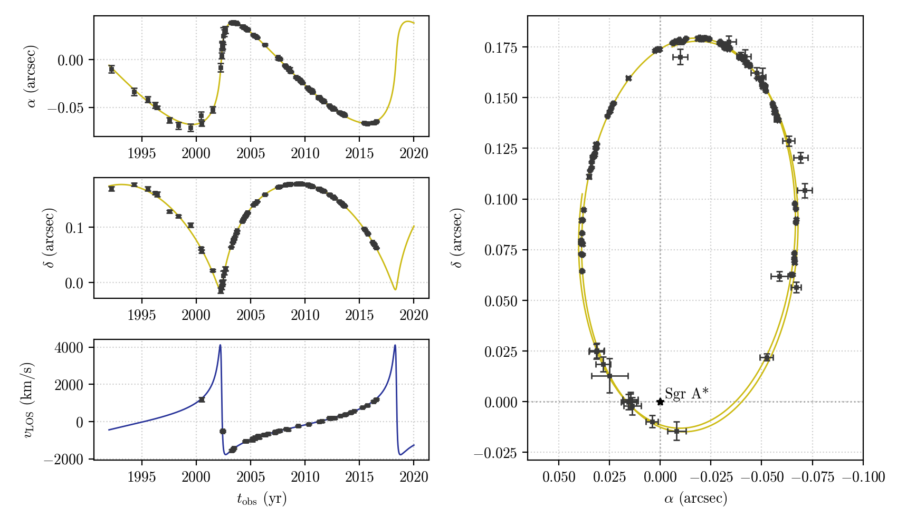

Fitting relativistic orbits to data¶
In this example, we will go through how one can use PyGRO in synergy with standard fitting packages (like emcee) to perform parameter estimation of a relativistic orbital model on observational data.
In particular, we will study the orbit of the S2 star in the Galactic Center, orbiting the supermassive black hole Sagittarius A* and fit an orbital model based on the Schwarzschild metric to publicly available data in Gillessen et al. (2017) (which can be found in our repo).
The code below can be run to start the orbital fitting, adjusting the parameters of the emcee sampler to one’s computational needs (we refer to the official documentation of the package for further info):
import pandas as pd
import numpy as np
import pygro
import emcee
from scipy.interpolate import interp1d
from astropy import constants, units
# CONSTANTS
G_N = constants.G.to('au**3/(Msun*s**2)').value
c = constants.c.to('au/s').value
Msun = units.Msun.to('kg')*units.kg
# OBSERVATIONAL DATA
# We use pandas to import observational data from Gillessen et al. (2017)
# https://arxiv.org/abs/1611.09144
pos = pd.read_csv("data/tab_gillessen_pos.csv", names = ["t", "alpha", "alpha_err", "delta", "delta_err"])
rv = pd.read_csv("data/tab_gillessen_vr.csv", names = ["t", "v_los", "vlos_err"])
t_pos = pos.t.values
alpha_obs = pos.alpha.values/1000
delta_obs = pos.delta.values/1000
alpha_err = pos.alpha_err.values/1000
delta_err = pos.delta_err.values/1000
t_rv = rv.t.values
vlos_obs = rv.v_los.values
vlos_err = rv.vlos_err.values
# ORBITAL MODEL
# Orbital parameters for S2 from Gillessen et al 2017
# https://arxiv.org/abs/1611.09144
M = 4.35
D = 8.33
t_p = 2002.33
a = 0.1255
e = 0.8839
inc = np.deg2rad(134.18)
Omega = np.deg2rad(226.94)
omega = np.deg2rad(65.51)
# Reference frame priors from Plewa et al. (2015) to take into account zero-point offset and drift of the astrometric reference frame
x0 = 0
y0 = 0
vx0 = 0
vy0 = 0
vLSR = 0
# Starting values of the parameters for the MCMC
# the walkers than explore the parameter space thanks to the flat priors
start_params = np.array([D, M, t_p, a, e, inc, Omega, omega, x0, y0, vx0, vy0, vLSR])
# Sigmas for defining flat priors (and for the samll ball in the parameter space in which we initialize the walkers)
delta_params = np.array([0.2, 0.02, 0.03, 0.0009, 0.0019, np.deg2rad(0.40), np.deg2rad(0.60), np.deg2rad(0.57), 0.0002, 0.0002, 0.0001, 0.0001, 5])
start_flat = start_params-6*delta_params
end_flat = start_params+6*delta_params
# Defining the PyGRO Metric as shown in:
# https://rdellamonica.github.io/pygro/create_metric.html
name = "Schwarzschild spacetime"
coordinates = ["t", "r", "theta", "phi"]
transform_functions = [
"t",
"r*sin(theta)*cos(phi)",
"r*sin(theta)*sin(phi)",
"r*cos(theta)"
]
line_element = "-(1-2*M/r)*dt**2+1/(1-2*M/r)*dr**2+(r**2)*(dtheta**2+sin(theta)**2*dphi**2)"
metric = pygro.Metric(
name = name,
coordinates = coordinates,
line_element = line_element,
transform = transform_functions,
M = 1,
)
# Defining the PyGRO Geodesic Engine and setting a stopping criterion as shown in:
# https://rdellamonica.github.io/pygro/integrate_geodesic.html
geo_engine = pygro.GeodesicEngine(integrator="dp45")
geo_engine.set_stopping_criterion("r > 2.001*M", "horizon")
def get_observables(params):
# Incoming set of parameters from the Markov Chain
D, M, t_p, a, e, inc, Omega, omega, xS0, yS0, vxS0, vyS0, v_LSR = params
# Transforming the distance of SgrA* and the semi-major axis in AU
r_G = (constants.G*M*1e+6*Msun/constants.c**2).to('au').value
D_s = D*units.kpc.to('au')
a_sma = a*units.arcsec.to('rad')*D_s/r_G
# Defining keplerian orbital period to have a temporal scale to carry on the integration
T = np.sqrt(4*np.pi**2*a_sma**3)
# Definition of the Orbit object as shown in:
# https://rdellamonica.github.io/pygro/integrating_orbits.html
# We use two different geodesics, one for the forward integration form the 2002 pericenter,
# the other for the backward integration
orbit_bw = pygro.Orbit(geo_engine=geo_engine ,verbose=False)
orbit_bw.set_orbital_parameters(t_P=0, a=a_sma, e=e, i=inc, omega=omega, Omega=Omega)
orbit_bw.integrate(2*T, 1, accuracy_goal = 15, precision_goal = 15, direction="bw")
orbit_fw = pygro.Orbit(geo_engine=geo_engine, verbose=False)
orbit_fw.set_orbital_parameters(t_P=0, a=a_sma, e=e, i=inc, omega=omega, Omega=Omega)
orbit_fw.integrate(2*T, 1, accuracy_goal = 15, precision_goal = 15, direction="fw")
# Function to convert orbit to observable quantities
def orbit_to_observables(orbit):
t, x, y, z = metric.transform(orbit.geo.x.T)
# Converting time to years
t_em = t_p+t*r_G/constants.c.to('au/yr').value
# Rømer delay
t_obs = t_em+z*r_G/constants.c.to('au/yr').value
# Astrometric observations
alpha = y*r_G/D_s*units.rad.to('arcsec')
delta = x*r_G/D_s*units.rad.to('arcsec')
# Line of sight velocity
v_z = orbit.geo.u[:,1]*np.cos(orbit.geo.x[:,2])-orbit.geo.x[:,1]*orbit.geo.u[:,2]*np.sin(orbit.geo.x[:,2])
longitudinal_redshift = v_z
# Relativistic redshift
einstein_redshift = orbit.geo.u[:,0]-1
# Total line of sight velocity
redshift = (longitudinal_redshift+1)*(einstein_redshift+1)-1
v_los = redshift*constants.c.to('km/s')
return t_obs, alpha, delta, v_los
# Merging of the forward and backward geodesics
t_obs_bw, alpha_bw, delta_bw, v_los_bw = orbit_to_observables(orbit_bw)
t_obs_fw, alpha_fw, delta_fw, v_los_fw = orbit_to_observables(orbit_fw)
t_obs = np.hstack([np.flip(t_obs_bw), t_obs_fw])
alpha = np.hstack([np.flip(alpha_bw), alpha_fw])
delta = np.hstack([np.flip(delta_bw), delta_fw])
v_los = np.hstack([np.flip(v_los_bw), v_los_fw])
# Interpolation of the integrated orbit. Using cubic spiline which is a good interpolator for DormandPrince5(4) integrators
alpha_int = interp1d(t_obs, alpha)
delta_int = interp1d(t_obs, delta)
v_los_int = interp1d(t_obs, v_los)
# Final determination of the orbit at the observation epochs + zero-point offset and drift of the reference frame
alpha = alpha_int(t_pos)+xS0+vxS0*(t_pos-2009.2)
delta = delta_int(t_pos)+yS0+vyS0*(t_pos-2009.2)
v_los = v_los_int(t_rv)-v_LSR
return alpha, delta, v_los
# FITTING
# Gaussian priors log-likelihood
def logprob_prior_gauss(param, start, delta):
return -(param-start)**2/(2*delta**2)
# Flat priors log-likelihood
def logprob_prior_flat(param, start, end):
if start < param < end:
return 0.0
return -np.inf
# Conmplete set of priors
def log_prior(params):
prior = 0
for i, param in enumerate(params):
if i in range(8,13):
# Gaussian priors on reference frame parameters
prior += logprob_prior_gauss(param, start_params[i], delta_params[i])
else:
# Flat priors on all other parameters
prior += logprob_prior_flat(param, start_flat[i], end_flat[i])
return prior
# Computing the likelihood of a given set of parameter
def log_likelihood(params):
# Orbital model
alpha, delta, v_los = get_observables(params)
# Cmparison with data
likelihood = np.linalg.norm((alpha-alpha_obs)/alpha_err)**2/2
likelihood += np.linalg.norm((delta-delta_obs)/delta_err)**2/2
likelihood += np.linalg.norm((v_los-vlos_obs)/vlos_err)**2/2
return -likelihood
# Total log-likelihood
def log_posterior(params):
prior = log_prior(params)
if not np.isfinite(prior):
return -np.inf
likelihood = log_likelihood(params)
return prior+likelihood
# RUNNING MCMC
# Setting MCMC parameters
nwalkers = 32
ndim = len(start_flat)
max_n = 300000
# Generating random initial positions for walkers based on the priors
start = np.zeros((nwalkers, ndim))
for i in range(ndim):
start[:, i] = np.random.uniform(start_flat[i], end_flat[i], nwalkers)
# Running the MCMC using emcee
# Here one can set the properties of the sampler, implement convergence criteria and save the results of the emcee sampling.
# See the official documentation: https://emcee.readthedocs.io/en/stable/
if __name__ == "__main__":
sampler = emcee.EnsembleSampler(nwalkers, ndim, log_posterior)
sampler.run_mcmc(start, max_n)
When running the above code and letting in reach convergence, one obtains the following posterior (we only show the posteriors for the orbital parameters):
{kind=link}
The credible intervals for all the parameters (reported in the table below) are perfectly compatible with those coming from a keplerian orbital model fitting (from e.g. Gillessen et al. (2017)), thus validating the fitting methodology using PyGRO.
Parameter (unit) |
Best Fit Value |
Error |
|---|---|---|
\(D\) (kpc) |
8.29 |
0.17 |
\(M\) (\(10^6 M_\odot\)) |
4.29 |
0.19 |
\(t_p\) (yr) |
2002.325 |
0.005 |
\(a\) (arcsec) |
0.1250 |
0.0009 |
\(e\) |
0.8830 |
0.0018 |
\(i\) (\(^\circ\)) |
134.72 |
0.40 |
\(\Omega\) (\(^\circ\)) |
227.28 |
0.59 |
\(\omega\) (\(^\circ\)) |
65.39 |
0.57 |
\(\alpha_0\) (mas) |
0.24 |
0.13 |
\(\delta_0\) (mas) |
-0.17 |
0.19 |
\(v_{\alpha,0}\) (mas/yr) |
0.110 |
0.041 |
\(v_{\delta,0}\) (mas/yr) |
0.110 |
0.051 |
\(v_{\text{LOS},0}\) (km/s) |
-2.1 |
4.1 |
The set of astronomical observables obtained assuming the best fit parameters is shown below
{kind=link}